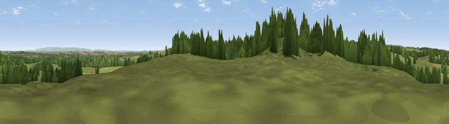

Viewpoint near Ripon
#20872 in England · top 45% of its area beats it · near RiponWhere it is
The exact computed spot (SE 28825 69425). Click the marker for map links.
The view, rendered

A 360° render of this exact spot computed from the terrain model, tree cover and land cover — summer colours, afternoon light, calibrated against photographs of famous viewpoints. Real trees, hedges and buildings will differ in detail.
The panorama
Grey silhouette: terrain skyline in each direction (720 bearings, Earth curvature and refraction included). Dashed green: skyline with trees (+15 m) and buildings (+8 m) as obstacles. Blue strip: how far the ground is visible on each bearing.
Where the view opens
Wedge length = distance to the farthest visible ground on that bearing (vegetation-aware). Rings at 10, 25 and 50 km.
What fills the view
61% grassland · 24% woodland · 12% cropland · 3% built-up
Angular shares of the visible panorama (visual magnitude), not map area. Landscape diversity 0.44 (0–1 Shannon).
Key numbers
More beautiful places nearby
The staircase of upgrades: each row has a higher view potential than everything closer. Driving times are estimates from straight-line distance, calibrated against real road routing — check an actual route before setting out.
| Place | Direction | Drive | Score |
|---|---|---|---|
| How Hill | SSW · 3 km | ~7 min | 72.9 |
| Viewpoint near Grewelthorpe | NW · 10 km | ~19 min | 73.9 |
| Viewpoint near Bewerley | WSW · 17 km | ~30 min | 76.8 |
| Viewpoint near East Witton | NW · 21 km | ~36 min | 77.8 |
| Hood Hill | ENE · 24 km | ~40 min | 79.6 |
| Viewpoint near Kirby Knowle | NE · 25 km | ~40 min | 80.5 |
| Viewpoint near Thirlby | ENE · 26 km | ~42 min | 81.5 |
| Beacon Hill | NNE · 35 km | ~53 min | 84.7 |
54.11989, -1.56049 · source: screening · position refined by local search. Computed location — check access rights before visiting.